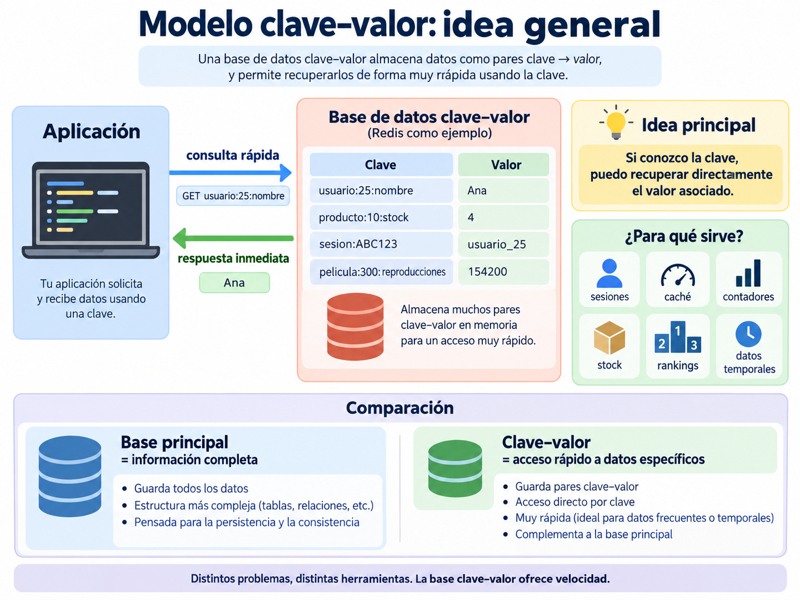
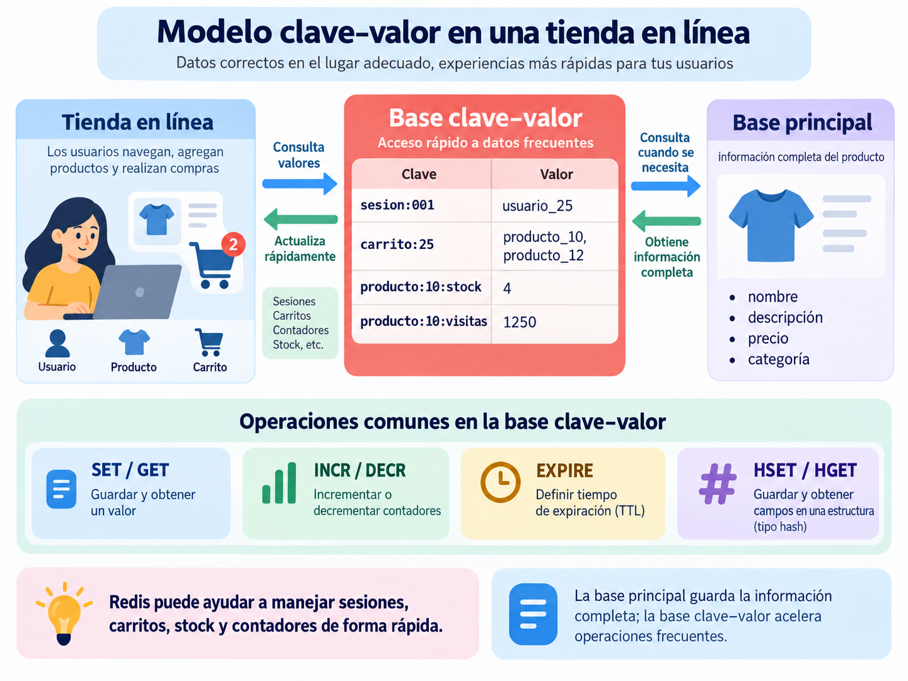
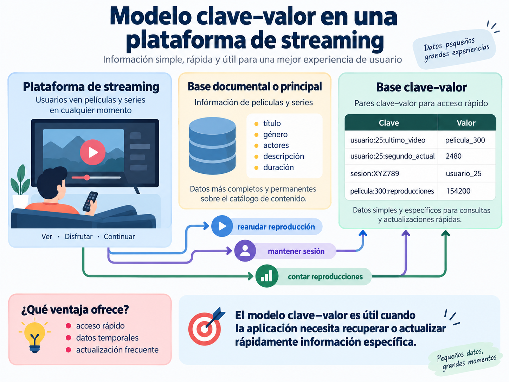

Redis: comandos y práctica con bases clave–valor
1 Introducción
Redis es un sistema de almacenamiento de datos en memoria basado principalmente en el modelo clave–valor.
En este modelo, cada dato se identifica mediante una clave, la cual permite recuperar rápidamente el valor asociado.
La estructura básica puede representarse así:
clave → valorPor ejemplo:
nombre → "Ana"
ciudad → "Xalapa"
visitas → 10A diferencia de una base documental como MongoDB, donde la información suele organizarse en documentos y colecciones, en Redis el acceso a los datos se realiza principalmente mediante claves.
Además de almacenar valores simples, Redis permite trabajar con diferentes estructuras de datos:
Strings
Hashes
Lists
Sets
Sorted SetsEstas estructuras permiten utilizar Redis en aplicaciones como:
- caché;
- sesiones de usuario;
- contadores;
- control de stock;
- colas de tareas;
- rankings;
- almacenamiento temporal de datos;
- sistemas de mensajería.
2 Idea general del modelo clave–valor
Una base de datos clave–valor resulta especialmente útil cuando una aplicación necesita recuperar o actualizar rápidamente información específica mediante una clave conocida.
La idea principal puede resumirse de la siguiente manera:
Si conozco la clave, puedo recuperar directamente el valor asociado.
Por ejemplo:
usuario:25:nombre → Ana
producto:10:stock → 4
sesion:ABC123 → usuario_25
pelicula:300:reproducciones → 154200En muchos sistemas, Redis no necesariamente sustituye a la base de datos principal.
Puede utilizarse junto con una base relacional o documental para almacenar información que necesita consultarse o modificarse con mucha frecuencia.

De manera general, una aplicación puede separar la información de acuerdo con el tipo de operación que necesita realizar:
Base principal
│
├── información completa
├── relaciones
└── datos permanentes
Base clave–valor
│
├── información de acceso rápido
├── datos temporales
├── contadores
├── sesiones
└── valores que cambian frecuentementeEsto permite comprender que diferentes modelos de bases de datos pueden utilizarse dentro de una misma aplicación para resolver necesidades distintas.
3 Ejemplo: tienda en línea
Pensemos en una tienda en línea.
La información completa de un producto podría almacenarse en una base documental o relacional.
Por ejemplo:
Producto
│
├── nombre
├── descripción
├── precio
├── categoría
├── proveedor
└── característicasEsta información podría encontrarse en MongoDB, PostgreSQL u otra base utilizada como almacenamiento principal.
Sin embargo, dentro de la misma aplicación existen datos que necesitan consultarse o actualizarse constantemente.
Por ejemplo:
sesion:ABC123 → usuario_25
producto:10:stock → 4
producto:10:visitas → 1250Redis puede utilizarse para este tipo de información.
En una tienda en línea podría ayudar a manejar:
- sesiones de usuario;
- carritos de compra;
- control rápido de stock;
- contadores de visitas;
- productos más consultados;
- rankings;
- información temporal.

Por ejemplo, podemos almacenar el stock de un producto:
SET producto:10:stock 5Para consultar el valor:
GET producto:10:stockResultado esperado:
5
Si se realiza una compra, el stock puede disminuir:
DECR producto:10:stockDespués:
GET producto:10:stockResultado esperado:
4
También se podría llevar un contador de visitas del producto.
SET producto:10:visitas 0Cada vez que alguien consulta el producto:
INCR producto:10:visitasDe manera conceptual, una tienda podría distribuir la información así:
Tienda en línea
│
├── información completa de productos
│ MongoDB / PostgreSQL
│
├── sesiones de usuario
│ Redis
│
├── carrito
│ Redis
│
├── contador de visitas
│ Redis
│
├── stock de consulta rápida
│ Redis
│
└── ranking de productos
RedisEsto muestra una idea importante:
Una aplicación puede utilizar diferentes tipos de bases de datos para resolver diferentes necesidades.
No es necesario elegir únicamente entre MongoDB, PostgreSQL o Redis.
Cada tecnología puede cumplir una función diferente dentro del sistema.
4 Ejemplo: plataforma de streaming
Ahora pensemos en una plataforma de streaming.
La información completa de una película o serie podría almacenarse en una base documental.
Por ejemplo:
Película
│
├── título
├── actores
├── género
├── descripción
├── año
└── duraciónSin embargo, durante el uso de la aplicación también existe información que cambia constantemente.
Por ejemplo:
usuario:25:ultimo_video → pelicula_300
usuario:25:segundo_actual → 2480
pelicula:300:reproducciones → 154200
sesion:XYZ789 → usuario_25
Supongamos que un usuario está viendo una película y se detiene en el segundo 2480.
Ese valor podría almacenarse de forma rápida:
SET usuario:25:segundo_actual 2480Posteriormente puede recuperarse:
GET usuario:25:segundo_actualResultado esperado:
2480
La aplicación puede utilizar ese valor para continuar la reproducción aproximadamente desde el punto donde el usuario se quedó.
También se puede almacenar cuál fue el último contenido reproducido:
SET usuario:25:ultimo_video "pelicula_300"Para consultarlo:
GET usuario:25:ultimo_videoResultado esperado:
“pelicula_300”
Otro ejemplo podría ser un contador de reproducciones:
SET pelicula:300:reproducciones 154200Cada nueva reproducción puede incrementar el contador:
INCR pelicula:300:reproduccionesDe manera conceptual, la aplicación podría organizar la información así:
Plataforma de streaming
│
├── información de películas y series
│ Base documental
│
├── sesión del usuario
│ Redis
│
├── último contenido reproducido
│ Redis
│
├── posición de reproducción
│ Redis
│
└── contadores
RedisMientras una base documental puede almacenar una ficha completa:
Usuario 25
Nombre: Ana
Edad: 20
Ciudad: Xalapaen un modelo clave–valor podemos acceder directamente a información específica:
usuario:25:nombre → Ana
usuario:25:ciudad → Xalapa
usuario:25:sesion → activaPor esta razón, las bases clave–valor resultan especialmente útiles cuando una aplicación necesita realizar consultas y actualizaciones rápidas sobre información concreta.
5 Verificación de conexión
Antes de comenzar a trabajar con Redis, es conveniente comprobar que existe comunicación con el servidor.
Para ello se utiliza:
PINGSi Redis está funcionando correctamente, responde:
PONG
Este comando permite verificar de forma sencilla que el servidor está activo y que el cliente puede comunicarse con él.
6 Comandos básicos
Los comandos básicos permiten crear, consultar, verificar y eliminar claves.
6.1 SET
El comando SET permite almacenar un valor asociado a una clave.
SET nombre "Ana"En este ejemplo:
nombre → clave
"Ana" → valorSi la clave ya existe, SET reemplaza el valor anterior.
SET nombre "Carlos"Ahora la clave nombre contiene el valor "Carlos".
6.2 GET
El comando GET permite recuperar el valor almacenado en una clave.
GET nombreResultado esperado:
“Carlos”
6.3 EXISTS
El comando EXISTS permite comprobar si una clave existe.
EXISTS nombreSi la clave existe, Redis devuelve:
1
Si no existe, devuelve:
0
6.4 DEL
El comando DEL permite eliminar una clave.
DEL nombreDespués se puede comprobar que ya no existe:
GET nombreResultado esperado:
(nil)
7 Strings
Los strings son una de las estructuras más simples de Redis.
Permiten almacenar valores como texto, números, identificadores, estados o configuraciones sencillas.
Por ejemplo:
SET curso "Bases de Datos No Relacionales"Para recuperar el valor:
GET cursoResultado esperado:
“Bases de Datos No Relacionales”
También es posible modificar el valor utilizando nuevamente SET.
SET curso "Bases NoSQL"
GET cursoResultado esperado:
“Bases NoSQL”
El nuevo valor reemplaza al anterior.
8 Contadores
Redis permite realizar operaciones numéricas directamente sobre valores almacenados.
Esto resulta útil para representar:
visitas
likes
intentos
ventas
accesos
cantidades disponibles8.1 INCR
El comando INCR incrementa un valor numérico en una unidad.
SET visitas 10
INCR visitasResultado esperado:
11
Si se vuelve a ejecutar:
INCR visitasel valor aumentará nuevamente en una unidad.
8.2 DECR
El comando DECR disminuye un valor numérico en una unidad.
DECR visitas8.3 INCRBY
INCRBY permite incrementar una cantidad específica.
INCRBY visitas 5En este caso se agregan cinco unidades al valor actual.
8.4 DECRBY
DECRBY permite disminuir una cantidad específica.
DECRBY visitas 3En este caso se restan tres unidades.
8.5 Ejemplo: contador de visitas
SET pagina:inicio:visitas 0
INCR pagina:inicio:visitas
INCR pagina:inicio:visitas
INCR pagina:inicio:visitas
GET pagina:inicio:visitasResultado esperado:
3
9 Expiración de claves
Redis permite asignar un tiempo de vida a una clave.
Cuando ese tiempo termina, Redis elimina automáticamente la clave.
Esta característica resulta útil para:
- sesiones de usuario;
- códigos de verificación;
- caché;
- tokens;
- información temporal.
Primero se puede crear una clave:
SET sesion:ABC123 "usuario_25"Después se establece una duración de 60 segundos:
EXPIRE sesion:ABC123 60Para consultar cuánto tiempo le queda:
TTL sesion:ABC123TTL muestra el número de segundos restantes antes de que la clave expire.
También es posible establecer la expiración al mismo tiempo que se crea la clave:
SET codigo:verificacion "8472" EX 30En este caso, la clave tendrá una duración de 30 segundos.
Si se desea eliminar la expiración:
PERSIST codigo:verificacionLa clave permanecerá almacenada hasta que sea eliminada manualmente.
10 Hashes
Los hashes permiten almacenar varios atributos relacionados dentro de una misma clave.
Son útiles para representar entidades como:
productos
usuarios
cuentas
perfiles
configuracionesPor ejemplo, podemos representar un producto mediante la clave:
producto:10Dentro de ella se pueden almacenar campos como:
nombre
precio
stockPara crear el hash:
HSET producto:10 nombre "Laptop Lenovo" precio 18500 stock 5Para consultar toda la información:
HGETALL producto:10Redis mostrará los campos nombre, precio y stock junto con sus valores.
Para consultar únicamente el precio:
HGET producto:10 precioResultado esperado:
18500
Para modificar únicamente el stock:
HSET producto:10 stock 8Después:
HGET producto:10 stockResultado esperado:
8
10.1 HINCRBY
También es posible incrementar o disminuir valores numéricos dentro de un hash.
HINCRBY producto:10 stock -1Este comando disminuye el stock en una unidad.
Para aumentarlo:
HINCRBY producto:10 stock 510.2 HEXISTS
Permite comprobar si un campo existe dentro de un hash.
HEXISTS producto:10 precioSi existe, Redis devuelve:
1
10.3 HDEL
Permite eliminar un campo de un hash.
HDEL producto:10 precio11 Lists
Las listas permiten almacenar varios elementos manteniendo un orden.
Son útiles para representar:
colas
historiales
tareas pendientes
mensajes
procesos11.1 LPUSH
LPUSH agrega elementos al inicio de una lista.
LPUSH tareas "Revisar tarea"
LPUSH tareas "Preparar clase"
LPUSH tareas "Calificar examen"11.2 LRANGE
Permite consultar los elementos de una lista.
LRANGE tareas 0 -1En este comando:
0 → primer elemento
-1 → último elementoPor lo tanto, se muestran todos los elementos de la lista.
11.3 RPUSH
RPUSH agrega elementos al final de una lista.
RPUSH tareas "Subir calificaciones"11.4 LPOP
Elimina y devuelve el primer elemento de la lista.
LPOP tareas11.5 RPOP
Elimina y devuelve el último elemento de la lista.
RPOP tareas11.6 LLEN
Permite conocer la cantidad de elementos existentes.
LLEN tareas12 Sets
Los sets almacenan valores sin duplicados.
Son útiles cuando se necesita trabajar con elementos únicos.
Por ejemplo:
SADD materias "Bases de Datos"
SADD materias "Programación"
SADD materias "Estadística"Para mostrar todos los elementos:
SMEMBERS materiasSi se intenta agregar nuevamente un elemento que ya existe:
SADD materias "Estadística"Redis no creará un duplicado.
12.1 SISMEMBER
Permite comprobar si un elemento pertenece al conjunto.
SISMEMBER materias "Programación"Si existe:
1
Si no existe:
0
12.2 SREM
Permite eliminar un elemento.
SREM materias "Programación"12.3 SCARD
Permite conocer cuántos elementos únicos existen.
SCARD materiasLos sets pueden utilizarse para:
- etiquetas;
- categorías;
- usuarios únicos;
- permisos;
- intereses;
- participantes.
13 Sorted Sets
Los Sorted Sets funcionan de forma similar a los sets, pero cada elemento tiene asociada una puntuación.
Esta puntuación permite ordenar los elementos.
Son útiles para:
rankings
puntuaciones
videojuegos
productos más vendidos
clasificacionesPor ejemplo:
ZADD ranking 100 "Ana"
ZADD ranking 85 "Carlos"
ZADD ranking 120 "Mariana"
ZADD ranking 95 "Luis"13.1 ZRANGE
Permite mostrar los elementos ordenados de menor a mayor puntuación.
ZRANGE ranking 0 -1 WITHSCORES13.2 ZREVRANGE
Permite mostrar los elementos de mayor a menor puntuación.
ZREVRANGE ranking 0 -1 WITHSCORESPara mostrar únicamente los primeros tres lugares:
ZREVRANGE ranking 0 2 WITHSCORES13.3 ZINCRBY
Permite incrementar la puntuación de un elemento.
ZINCRBY ranking 20 "Carlos"13.4 ZSCORE
Permite consultar la puntuación de un elemento.
ZSCORE ranking "Ana"14 Consulta y administración de claves
Redis incluye comandos para consultar y administrar las claves existentes.
14.1 TYPE
Permite conocer el tipo de dato asociado a una clave.
TYPE producto:10Resultado esperado:
hash
14.2 KEYS
Permite buscar claves mediante patrones.
Para mostrar todas las claves:
KEYS *Para mostrar únicamente las que comienzan con producto::
KEYS producto:*En bases pequeñas puede resultar útil para explorar los datos.
En bases grandes, KEYS puede resultar costoso, por lo que se recomienda utilizar SCAN.
14.3 SCAN
SCAN permite recorrer las claves de forma progresiva.
SCAN 0También se pueden utilizar patrones:
SCAN 0 MATCH producto:*14.4 DBSIZE
Permite conocer cuántas claves existen en la base lógica actual.
DBSIZE14.5 RENAME
Permite cambiar el nombre de una clave.
SET materia "Bases NoSQL"
RENAME materia asignatura
GET asignaturaResultado esperado:
“Bases NoSQL”
14.6 MSET
Permite crear varias claves en una sola operación.
MSET pais "México" estado "Veracruz" municipio "Xalapa"14.7 MGET
Permite recuperar varias claves al mismo tiempo.
MGET pais estado municipioRedis devolverá los valores asociados a las tres claves.
15 Bases lógicas
Redis permite trabajar con diferentes bases lógicas dentro de una misma instancia.
Por defecto se utiliza la base:
SELECT 0Para cambiar a otra base:
SELECT 1Las claves almacenadas en una base lógica permanecen separadas de las demás.
Por ejemplo:
SELECT 0
SET ejemplo "Base 0"Después:
SELECT 1
GET ejemploRedis no encontrará la clave porque fue almacenada en la base 0.
Ahora se puede crear una clave con el mismo nombre en la base 1:
SET ejemplo "Base 1"
GET ejemploResultado esperado:
“Base 1”
Al regresar a la primera base:
SELECT 0
GET ejemploResultado esperado:
“Base 0”
16 Transacciones
Redis permite agrupar varios comandos dentro de una transacción.
La transacción comienza con:
MULTIDespués se agregan los comandos:
SET cuenta:saldo 1000
DECRBY cuenta:saldo 100
INCRBY cuenta:saldo 50Mientras la transacción está activa, Redis coloca los comandos en espera.
Para ejecutarlos:
EXECDespués se puede consultar el resultado:
GET cuenta:saldoResultado esperado:
950
También es posible cancelar una transacción.
MULTI
SET prueba "dato"
INCR contador
DISCARDDISCARD elimina los comandos pendientes sin ejecutarlos.
17 Pub/Sub
Redis incluye un mecanismo de comunicación llamado Publish/Subscribe, conocido como Pub/Sub.
En este modelo, un cliente puede suscribirse a un canal y otro cliente puede publicar mensajes.
Para observar su funcionamiento se necesitan dos clientes de Redis.
En el primer cliente:
SUBSCRIBE noticiasEl cliente queda escuchando el canal noticias.
En un segundo cliente:
PUBLISH noticias "Nueva clase de Redis"El mensaje será recibido por los clientes suscritos al canal.
También se pueden enviar nuevos mensajes:
PUBLISH noticias "Examen el viernes"Pub/Sub puede utilizarse en:
- notificaciones;
- mensajería;
- eventos en tiempo real;
- comunicación entre servicios.
18 Ejemplos aplicados
18.1 Sesión de usuario
Una sesión temporal puede almacenarse mediante:
SET sesion:001 "usuario:1" EX 300La sesión tendrá una duración de 300 segundos.
Para consultar cuánto tiempo queda:
TTL sesion:00118.2 Stock de productos
Un producto puede almacenarse mediante un hash:
HSET producto:1 nombre "Laptop Lenovo" precio 18500 stock 5Para disminuir el stock:
HINCRBY producto:1 stock -1Para consultar el nuevo valor:
HGET producto:1 stockResultado esperado:
4
18.3 Contador de visitas
SET pagina:inicio:visitas 0
INCR pagina:inicio:visitas
INCR pagina:inicio:visitas
INCR pagina:inicio:visitas
GET pagina:inicio:visitasResultado esperado:
3
18.4 Cola de pedidos
Se pueden agregar pedidos al final de una lista:
RPUSH cola:pedidos "pedido_001"
RPUSH cola:pedidos "pedido_002"
RPUSH cola:pedidos "pedido_003"Para consultar la cola:
LRANGE cola:pedidos 0 -1Para atender el primer pedido:
LPOP cola:pedidosDespués:
LRANGE cola:pedidos 0 -1mostrará únicamente los pedidos pendientes.
18.5 Usuarios únicos
SADD publicacion:25:usuarios "usuario1"
SADD publicacion:25:usuarios "usuario2"
SADD publicacion:25:usuarios "usuario3"
SADD publicacion:25:usuarios "usuario1"Aunque usuario1 se intente agregar dos veces, solo queda almacenado una vez.
Para mostrar los usuarios:
SMEMBERS publicacion:25:usuariosPara contar usuarios únicos:
SCARD publicacion:25:usuariosResultado esperado:
3
18.6 Ranking
ZADD ranking 100 "Ana"
ZADD ranking 85 "Carlos"
ZADD ranking 120 "Mariana"
ZADD ranking 95 "Luis"Para mostrar la clasificación:
ZREVRANGE ranking 0 -1 WITHSCORESPara mostrar únicamente los tres primeros lugares:
ZREVRANGE ranking 0 2 WITHSCORES18.7 Tienda
Una pequeña tienda puede representar sus productos mediante hashes.
HSET producto:1 nombre "Laptop Lenovo" precio 18500 stock 5 categoria "Computacion"
HSET producto:2 nombre "Mouse Logitech" precio 650 stock 20 categoria "Accesorios"
HSET producto:3 nombre "Monitor Samsung" precio 4200 stock 8 categoria "Computacion"Para consultar un producto:
HGETALL producto:1Para consultar únicamente su precio:
HGET producto:1 precioPara disminuir el stock:
HINCRBY producto:1 stock -1Para agregar unidades:
HINCRBY producto:2 stock 1019 Buenas prácticas para nombrar claves
Es recomendable utilizar nombres de claves claros y consistentes.
Una estructura común es:
entidad:id:campoPor ejemplo:
usuario:25:nombre
producto:10:stock
pagina:inicio:visitas
sesion:ABC123El uso de : ayuda a organizar visualmente las claves y permite identificar fácilmente a qué entidad pertenecen.
También es recomendable:
- utilizar nombres descriptivos;
- mantener una estructura consistente;
- evitar claves excesivamente largas;
- utilizar identificadores claros;
- separar entidades mediante
:.
Otros ejemplos:
universidad:estudiante:1001:nombre
tienda:producto:25:stock20 Información del servidor
Redis permite consultar información sobre la instancia que se encuentra funcionando.
Para obtener información general:
INFOPara consultar información específica del servidor:
INFO serverPara consultar información relacionada con el uso de memoria:
INFO memoryPara conocer información sobre los clientes conectados:
INFO clients21 Limpieza de datos
Redis permite eliminar todas las claves de una base lógica.
Para eliminar únicamente las claves de la base actual:
FLUSHDBPara eliminar todas las claves de todas las bases lógicas:
FLUSHALLLos comandos FLUSHDB y FLUSHALL eliminan datos.
Deben utilizarse con precaución y principalmente en bases de prueba.
22 Resumen de estructuras
| Estructura | Uso principal | Ejemplo |
|---|---|---|
STRING |
Valores simples, contadores y sesiones | SET nombre "Ana" |
HASH |
Objetos con varios campos | HSET producto:1 nombre "Laptop" precio 18500 |
LIST |
Colas, historiales y tareas | RPUSH cola:pedidos "pedido_001" |
SET |
Valores únicos | SADD materias "Estadística" |
SORTED SET |
Rankings y puntuaciones | ZADD ranking 100 "Ana" |
23 Resumen de comandos principales
La siguiente tabla resume los comandos revisados y su función principal.
| Comando | Función |
|---|---|
PING |
Comprueba si existe comunicación con el servidor Redis. |
SET |
Guarda un valor asociado a una clave. |
GET |
Recupera el valor almacenado en una clave. |
DEL |
Elimina una clave. |
EXISTS |
Comprueba si una clave existe. |
INCR |
Incrementa en una unidad un valor numérico. |
DECR |
Disminuye en una unidad un valor numérico. |
INCRBY |
Incrementa un valor numérico en una cantidad específica. |
DECRBY |
Disminuye un valor numérico en una cantidad específica. |
EXPIRE |
Asigna un tiempo de vida a una clave. |
TTL |
Muestra cuánto tiempo le queda a una clave antes de expirar. |
PERSIST |
Elimina la expiración de una clave. |
HSET |
Crea o modifica campos dentro de un hash. |
HGET |
Recupera un campo específico de un hash. |
HGETALL |
Muestra todos los campos y valores de un hash. |
HEXISTS |
Comprueba si un campo existe dentro de un hash. |
HDEL |
Elimina un campo dentro de un hash. |
HINCRBY |
Incrementa o disminuye un campo numérico dentro de un hash. |
LPUSH |
Agrega un elemento al inicio de una lista. |
RPUSH |
Agrega un elemento al final de una lista. |
LRANGE |
Muestra un rango de elementos de una lista. |
LPOP |
Elimina y devuelve el primer elemento de una lista. |
RPOP |
Elimina y devuelve el último elemento de una lista. |
LLEN |
Muestra la cantidad de elementos de una lista. |
SADD |
Agrega elementos a un conjunto. |
SMEMBERS |
Muestra todos los elementos de un conjunto. |
SISMEMBER |
Comprueba si un elemento pertenece a un conjunto. |
SREM |
Elimina un elemento de un conjunto. |
SCARD |
Muestra la cantidad de elementos de un conjunto. |
ZADD |
Agrega elementos y puntuaciones a un Sorted Set. |
ZRANGE |
Muestra elementos ordenados de menor a mayor puntuación. |
ZREVRANGE |
Muestra elementos ordenados de mayor a menor puntuación. |
ZINCRBY |
Incrementa la puntuación de un elemento. |
ZSCORE |
Consulta la puntuación de un elemento. |
TYPE |
Muestra el tipo de dato asociado a una clave. |
KEYS |
Busca claves que coincidan con un patrón. |
SCAN |
Recorre las claves de forma progresiva. |
DBSIZE |
Muestra cuántas claves existen en la base actual. |
RENAME |
Cambia el nombre de una clave. |
MSET |
Guarda varias claves y valores en una sola operación. |
MGET |
Recupera varias claves en una sola operación. |
SELECT |
Cambia de base lógica. |
MULTI |
Inicia una transacción. |
EXEC |
Ejecuta los comandos pendientes de una transacción. |
DISCARD |
Cancela una transacción. |
SUBSCRIBE |
Suscribe un cliente a un canal. |
PUBLISH |
Publica un mensaje en un canal. |
INFO |
Muestra información sobre el servidor Redis. |
FLUSHDB |
Elimina todas las claves de la base lógica actual. |
FLUSHALL |
Elimina todas las claves de todas las bases lógicas. |